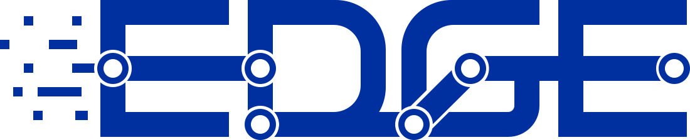
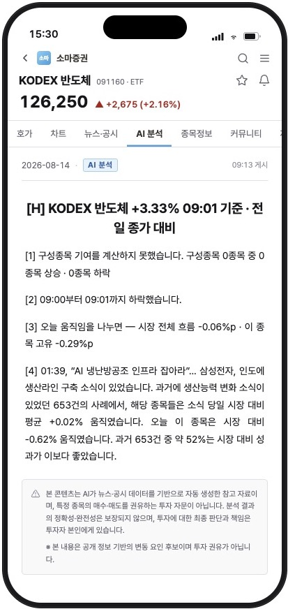
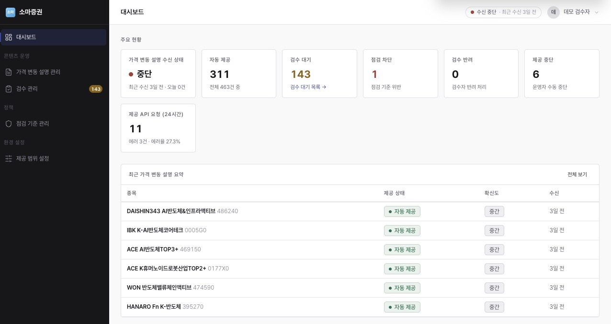
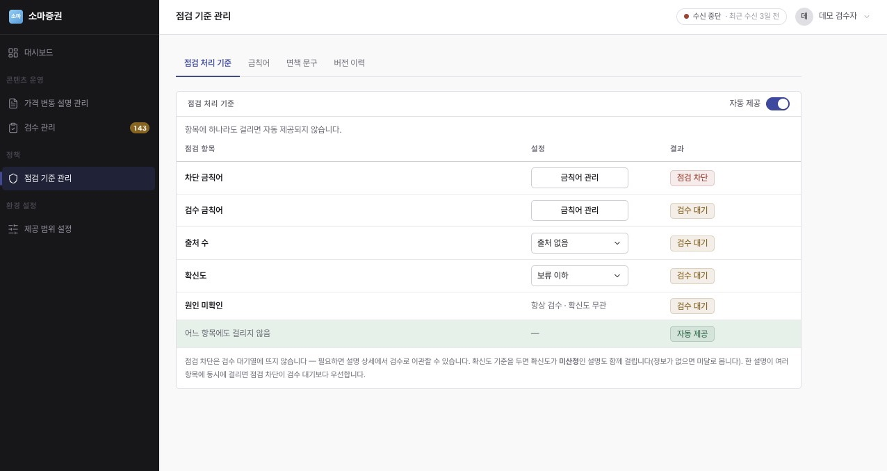
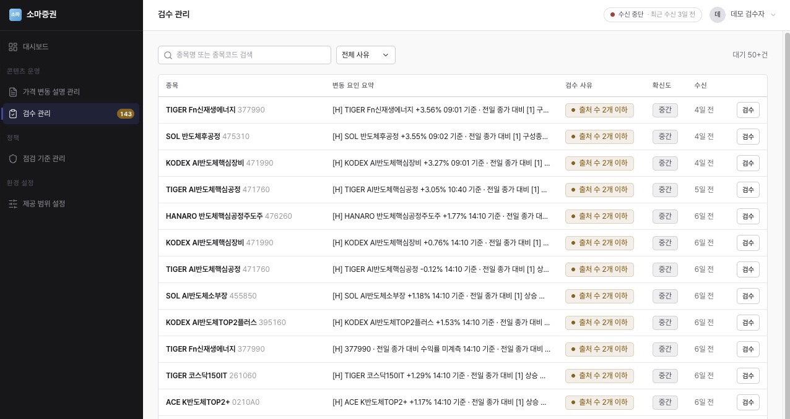
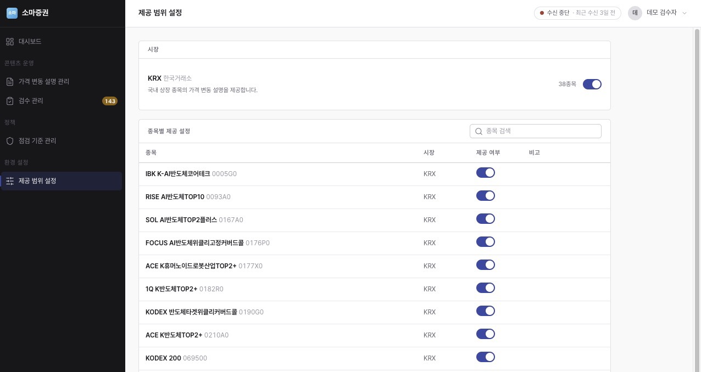
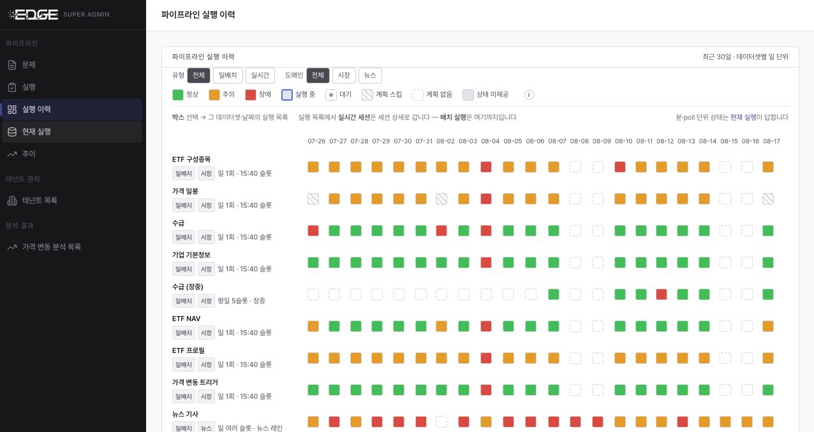

검증된 근거만 설명이 됩니다. 무엇을 내보낼지는 증권사 정책이 정합니다.

투자자가 보유 종목 화면에서 "왜 움직였는지"를 그 자리에서 확인합니다.

지금 몇 건이 나갔고 몇 건이 사람 손을 기다리는지 한 화면에서 잡힙니다.

어떤 설명이 사람을 거치지 않고 나갈 수 있는지, 증권사가 규칙으로 정합니다.

기준에 걸린 설명은 사람이 보고 결정합니다.

준비된 설명이라도 어디까지 내보낼지는 따로 정합니다.

설명의 재료가 되는 수집 레인이 그날 어떤 상태였는지 확인합니다.